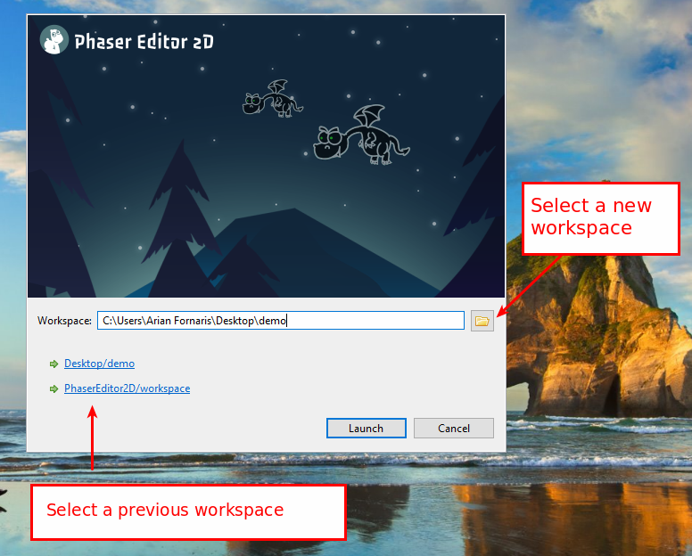
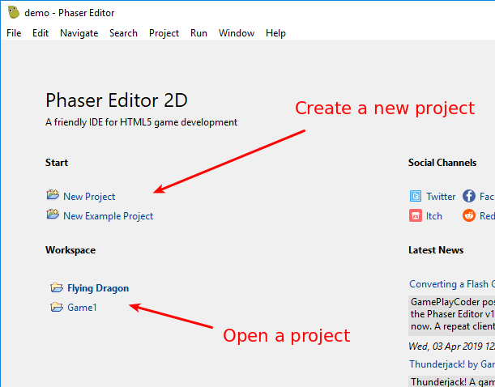
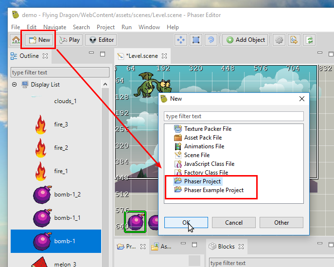
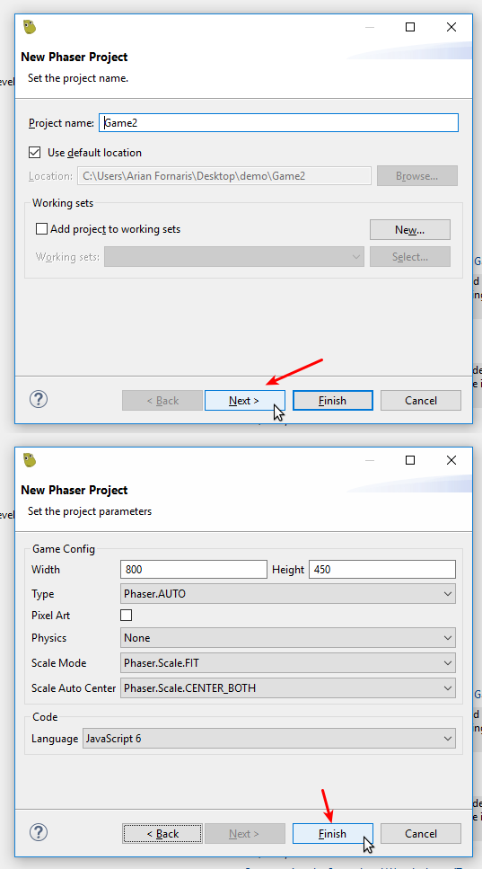

1 First Steps¶
In this section, we explain step by step some of the common tasks you may do when starting with Phaser Editor 2D.
1.1 Download and install¶
Binaries are available in the Downloads page of the Phaser Editor 2D’s website. Phaser Editor 2D is not an installable application, it is distributed in form of ZIP files that you can un-compress and run. Note there are three different files, one for each supported platform: Windows, macOS, and Linux.
1.2 Run Phaser Editor 2D¶
Un-compress the ZIP file and double click on the executable file PhaserEditor2D.exe. Well, each platform has a different executable name, you can find more details about your platform in the next sections. Together with the executable, there is a script to run the editor in debug mode. This mode is useful to get debug messages or start an instance with a clean state.
When Phaser Editor 2D starts, it shows a splash screen and later a Launcher Dialog. In this dialog, you should select the path to the workspace. Usually, the default path is fine (a workspace sub-folder in the current dialog), but you can change it. The workspace is a special folder to store the projects and other data like preferences. You can change the list of workspaces and other settings in Preferences → General → Startup and Shutdown → Workspaces.
Learn more about the workspace
1.2.1 Windows¶
To run Phaser Editor 2D on Windows run the file PhaserEditor2D.exe.
Execute the file Debug.bat to run the editor in debug mode.
1.2.2 macOS¶
Phaser Editor 2D is distributed in macOS as an application (.app folder). To run it the first time, you should right-click on the Phaser Editor 2D application and select Open. This step is needed because the editor is not certified by Apple. The second time, you can run the editor with a double click.
To run the editor in debug mode, you can execute the Debug.sh script in a terminal.
When we build the editor for macOS we add execution permission to a series of files, but if the OS shows a message about execution permissions, you can set them again using the SetExecPermissions.sh script.
1.2.3 Linux¶
To run Phaser Editor 2D on Linux executes the file PhaserEditor2D.
To run the editor in debug mode, execute the script Debug.sh.
When we build the editor distribution, we set execution permission to a couple of files, however, if for any reason you need to set these permissions again, run the script SetExecPermissions.sh in a terminal.
1.3 Create your first game¶
When the editor opens the first time (or an empty workspace) it shows the Start perspective. That perspective provides the links to create a project or an example project:
Learn more about the Start perspective
The New Project link opens a wizard where you can set some settings like the initial game size or programming language (JavaScript or TypeScript).
The New Example Project opens a wizard where you can select an example to be cloned as a project.
You can create new projects at any time, by clicking the New button of the main toolbar.
1.3.1 Regular Project¶
The regular project wizard shows settings related to the game configuration: game size, canvas type, scale mode, etc… In addition, you can select the language to be used in the project: JavaScript 6 or TypeScript.
Learn more about the Phaser Project wizard
The wizard creates a project with a basic structure and a few files common in many projects, like an Asset Pack file, a Texture Atlas file and a Scene file.
1.3.2 Example Project¶
You can create a project based in some of the official Phaser examples or the Phaser Editor 2D examples. It is a valuable resource to learn Phaser.
Learn more about the Phaser Example Project wizard

1.4 Play the project¶
Phaser Editor 2D has a built-in HTTP server that you can use to play the game project. When you click the Play button in the main toolbar, the built-in server is started and the default OS default browser is launched. You can configure the default browser in Preferences → General → Web Browser.
Learn more about running the game

1.5 Switching projects¶
Phaser Editor 2D allows to work with many projects at the same time —it is a feature inherited from the Eclipse IDE— however, in Phaser game development you don’t create references between projects, so we decided to use the Active Project concept. This means that you are going to say to the IDE what is the project you are working on and the UI will show only the content and commands related to that project.
You can select the active project at any time switching to the Start perspective or launching the Open Project Dialog (Ctrl+Alt+P or right-click on the Start button).
1.6 External editors integration¶
The “war” of code editors and IDEs is bloody and there is not a clear winner. Phaser Editor 2D allows to edit all common web files (JS, TS, HTML, CSS,…) and provides acceptable tooling. However, it is very important for us that you can use your loved, alien code editor to write the game logic.
Learn more about the external editors integration
We choose Visual Studio Code as the first option, and generate full compatible projects, but you can configure any other code editor.
Window → Preferences → Phaser Editor → External Code Editor

1.7 Unlock Phaser Editor 2D¶
Phaser Editor 2D is a commercial product, you should purchase a license key to use it in all its potential (Premium mode). However, by default, it runs in a Free mode that provides all the features and tools but is limited to a certain number of game assets.
To unlock the Premium mode, click on Help → Unlock Phaser Editor to open the activation dialog. Write the purchased license key and click on the Activate button.
This is a table with a comparison between the Free and Premium mode:
| Assets | Free mode | Premium mode |
|---|---|---|
| Image keys | Limited to 10 | No limits |
| Texture Atlas keys | Limited to 3 | No limits |
| Tilemap keys | Limited to 5 | No limits |
Scene (.scene files) |
Limited to 5 | No limits |
| Others | No limits | No limits |
The file keys are defined in the asset pack files.
There are three types of licenses:
- One year license.
- Two years license.
- Lifetime license.
All license types unlock all features and all Phaser Editor 2D versions, but have different expiration date —and price—.